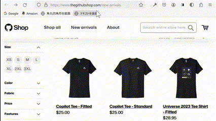
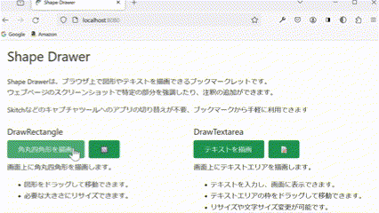

Shape Drawer


Shape Drawerはブラウザ上で図形やテキストを描画できるブックマークレットです。
ウェブページのスクリーンショットで特定の部分を強調したり、注釈に利用できます。
Skitchなどのキャプチャツールへの切り替えが不要で、ブックマークバーから手軽に利用できます。
DrawRectangle
画面上に角丸四角形を描画します。
- 図形をドラッグして移動できます。
- 必要な大きさにリサイズできます。
DrawTextarea
画面上にテキストエリアを描画します。
- テキストを入力し、画面に表示できます。
- テキストエリアの枠をドラッグして移動できます。
- リサイズや文字サイズ変更が可能です。
インストール
ご利用のブラウザのブックマークバーに登録してください。- ブックマークバーを表示します。
-
上のボタンをブックマークバーにドラッグします。
ブックマークバーのスペースを節約したい場合は絵文字を使ったボタンを利用してください。
